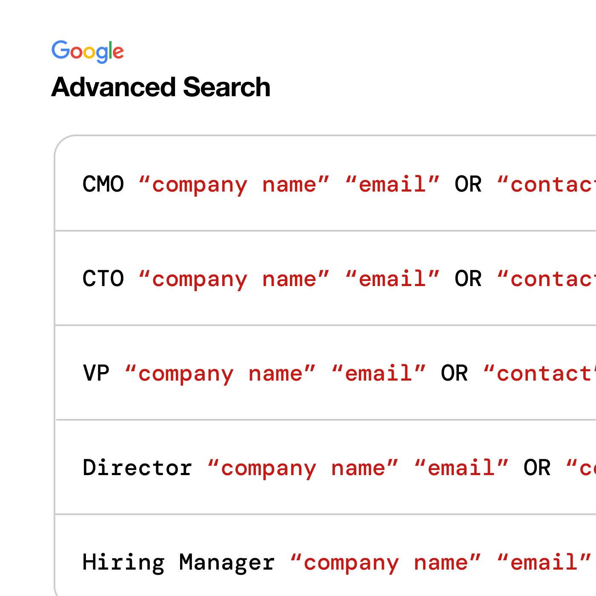
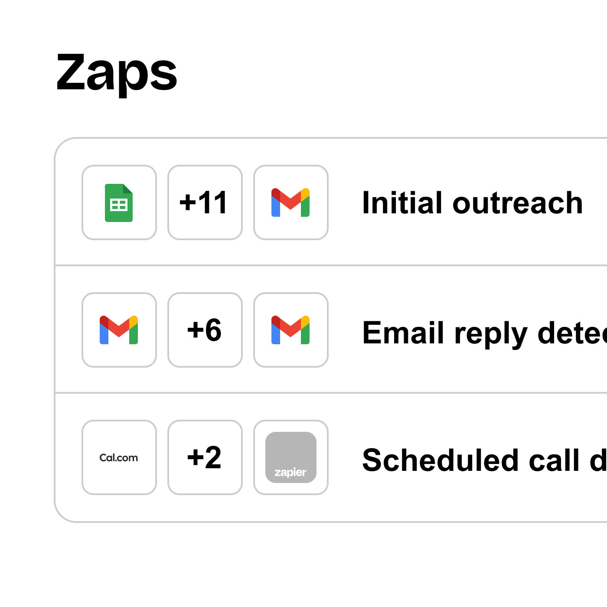
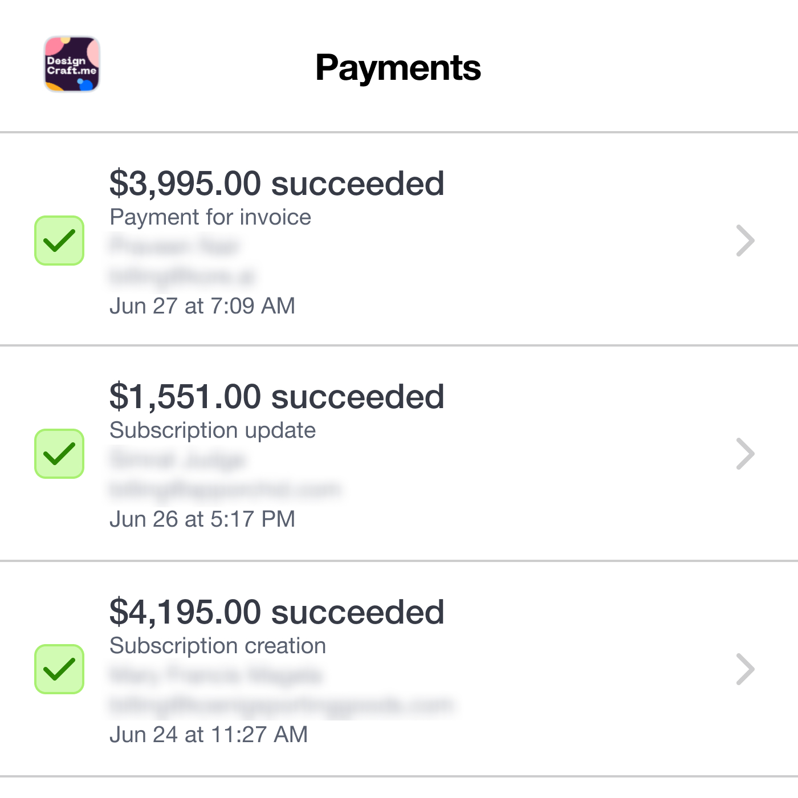
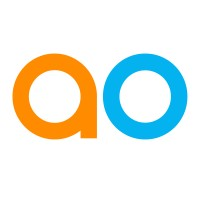

Master
c ld outreach
with AI
Automate your lead generation from start to finish with zapier-
powered AI outreach, turning cold leads into hot prospects.
Why should you buy this?
I made cold outreach suck less, just for you.
Launching DesignCraft.me was exciting, but attracting clients beyond my established network was brutal. I tried endless job applications and various outreach methods, but they led me nowhere and took up too much of my design time. So, I figured out a way to completely automate outreach using just a few simple tools that are both free and affordable, without the need for high-priced subscriptions.
I spent three months developing this unique AI-driven approach, which not only initiated conversations but also nurtured them without my constant input, leading directly to 3-4 client sign-ups each month for my design services. This template is my blueprint for you. It includes every step I took to set up this full-scale automation using Zapier and OpenAI. You’ll have access to my templates and step-by-step guides that are easy to follow and apply. I want you to achieve similar results—so you can earn more and hustle less.
I spent three months developing this unique AI-driven approach, which not only initiated conversations but also nurtured them without my constant input, leading directly to 3-4 client sign-ups each month for my design services. This template is my blueprint for you. It includes every step I took to set up this full-scale automation using Zapier and OpenAI. You’ll have access to my templates and step-by-step guides that are easy to follow and apply. I want you to achieve similar results—so you can earn more and hustle less.
What will you get?
Effortless cold outreach
Powered by and
Instructions to build your own Custom GPT
I will show you how to clone yourself with ChatGPT by providing you with step-by-step instructions to build and train your own custom GPT. This is the most important part of your entire automation!
My comprehensive lead generation guide
Receive a detailed guide showing you how I use sophisticated search strings on Google to sift through the web and gather leads from LinkedIn, Facebook, Twitter, Instagram, and many other platforms that others overlook, setting the stage for your hands-free automation.
My proprietary automation template
I’ll share three custom templates I created using Zapier, each accompanied by step-by-step instructions to properly set up the automation. You’ll integrate your custom GPTs with these automations to streamline your outreach process from initial contact, ongoing engagement, to closing the deal.
My mission
Is
to
empower
you
with
the
knowledge
and
skills
to
leverage
AI
for
generating
leads
that
directly
boost
your
earnings.
My outreach process
Search for leads, automate the
outreach, and close the deal
outreach, and close the deal

Find your ideal leads using google

Automate your outreach with Zapier

Close the deal and make money
Acces your toolkit!
Get started today
Experience the benefits of automating your cold outreach with this full-scale automation toolkit for only $247 . Save time, expand your reach, and focus on what you do best.
Need something spesific?
I can personalize your template with your preferred lead generation tool like Hunter.io, Luna.ai, Apollo.io, Clearbit, and more.
Commmonly asked questions
What exactly will I get from my purchase?

You will receive a no-fluff guide that covers everything from finding your first leads to automating the entire process. Included are three sets of detailed step-by-step instructions to build your Zapier automations, ensuring you set up a complete cold outreach system. Additionally, you will receive instructions to create your own custom GPT and advanced search techniques for finding leads, along with guidelines on how to set them up and use them for your automation.
Why did you create this blueprint?
I struggled with getting clients, so I wanted a reliable way to consistently attract new business. Zapier helped me automate the process, and now I’m sharing my exact setup with you so you can achieve the same results without spending a lot of time figuring it out.
Can beginners in AI and Zapier follow along?
Absolutely! My guide is designed to be user-friendly for beginners. Just follow the detailed step-by-step instructions, and you’ll be ready to hit the ground running. I’ve simplified everything into clear, actionable steps, making it accessible whether you’re new to AI and automation or already have some experience.
How soon can I see results?
The initial setup for Zapier automations and lead searching is relatively quick. Most of your effort will go into building your custom GPT, which is crucial for the automation. You could see results and land a client within 30 days. However, results may vary depending on your dedication and the quality of your custom GPT.
Is the investment in this blueprint worth it?
I’d say so! You have the potential to make back up to 10x your ENTIRE investment with just one client. I spent three months fine-tuning this setup so you can hit the ground running fast. Small investment, massive returns—it’s that simple.
Can the steps in this blueprint be applied to any industry?
Yes! These versatile instructions can be adapted to virtually any industry. Whether you’re in B2B sales, consulting, SaaS, or any other field, they will help streamline your cold outreach process.
How is your blueprint different from other AI outreach tools?
My blueprint is a one-time purchase, costing less than a single monthly subscription. It fully automates the outreach process, requiring no manual intervention once set up, unlike expensive subscription services that still need manual input.
Can you build a custom GPT for me?
Yes, I can build a custom GPT for you. There is an additional cost for this service. If you’re interested in learning more, please shoot me an
What if I have questions or get stuck?
You shan't worry! My step-by-step instructions are easy to follow, but I am always available for support and guidance to get your automation up and running smoothly.
Words from the wise
Jen is a phenomenal leader with an exceptional understanding of AI. Her innovative approach and expertise make her the perfect person to teach this course.
Raj Koneru
Kore.ai
Jennifer is an exceptional designer with a sharp intellect, and deep design psychology expertise. She is also a great teacher and mentor, making her the perfect fit for this subject matter.
Anardo Cuello
Highmark Health

Jen has made an excellent plan for this course, and she’s an excellent designer and a great teacher. If you’re interested in how AI can help with cold outreach, I highly recommend her course!
Josh Wolfson
App Orchid Inc
Access your toolkit for only $247
Turn c ld outreach
into h t outreach
Designcraft.me © 2024
Terms & Conditions
Check out Designcraft.me
Contact me